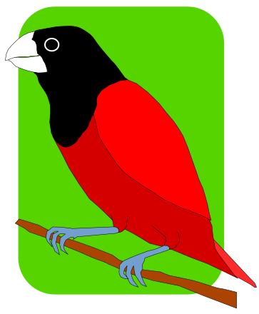

|
 Mayang Pula Publishing "It’s read.” Prospect Park, Minneapolis, Minnesota ⬇️ Consciousness: Concatenating Choice ⬇️ About Us ⬇️ |
|
Consciousness: Concatenating Choice A human is “more significant than a star.” A star creates atoms. In turn, the cosmos concatenates atoms into molecules, and molecules into macromolecules, continually creating the physical world. A human creates spiritual worlds atop the physical world by mimicking the creative power of the universe—for example, by concatenating letters into words, words into sentences, and sentences into paragraphs. Humans are creative microcosms made in the image of the creative macrocosm. This exceptional creative power of humans is a consequence of evolution. Over many millions of years, a neuronal algorithm evolved in the primary sensory areas of the cerebral cortex of mammals that bestowed an external consciousness of space. Seeing visual ‘scenes’ beyond detecting visual ‘features’ gave mammals an evolutionary advantage over amphibians, reptiles, and fish. More recently, over scores of thousands of years, a more plastic version of this algorithm extended into the expanding frontal cortex of humans conferring an eternal consciousness of time. Contemplating the past, present, and future allows humans to imagine and choose alternative spiritual worlds. The external and eternal consciousnesses don’t simply transmit information from the external world into the human brain; they create internal information. Concatenation in the brain creates internal information like concatenation creates information in the physical world. A signature of information created by concatenation is the information hierarchy. The human cerebral cortex holds an information hierarchy rising from “unimodal” primary sensory and motor areas to “multimodal” association areas to “transmodal” association areas in the frontal cortex. That this hierarchy is assembled by repetitions of a common neuronal algorithm is suggested in that the neocortex utilizes the same six-layered circuitry throughout. However, the algorithms in the primary sensory and motor areas and the association areas have at least two notable differences. First, the latter are higher in the information hierarchy of the neocortex. Second, the latter have a much longer, if any, critical period of plasticity after which much of the neuronal circuitry gets hardwired. As a result, eternal consciousness in humans is freer and more transformative than external consciousness in mammals. The universe itself is an information hierarchy. At the foundation of this hierarchy is spacetime. It is proposed that the concept of a deterministic, continuous spacetime be replaced by one of a nondeterministic, quantal space(choice). The concatenation of space(choice) to quarks and electrons to atoms to molecules to us may underlie our free will.
|
|
Mayang Pula Publishing is a publisher of personal philosophical stories and poems.
Future books:
|